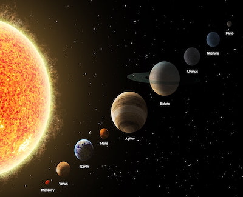

|
The Solar System[c] is the gravitationally bound system of the Sun and the objects that orbit it. It formed 4.6 billion years ago from the gravitational collapse of a giant interstellar molecular cloud. The vast majority (99.86%) of the system's mass is in the Sun, with most of the remaining mass contained in the planet Jupiter. The four inner system planets—Mercury, Venus, Earth and Mars—are terrestrial planets, being composed primarily of rock and metal. The four giant planets of
the outer system are substantially larger and more massive than the terrestrials. The two largest, Jupiter and Saturn, are gas giants, being composed mainly of hydrogen and helium; the next two, Uranus and Neptune, are ice giants, being composed mostly of volatile substances with relatively high melting points compared with hydrogen and helium, such as water, ammonia, and methane. All eight planets have nearly circular orbits that lie near the plane of Earth's orbit, called the ecliptic.
The Solar System formed 4.568 billion years ago from the gravitational collapse of a region within a large molecular cloud.[e] This initial cloud was likely several light-years across and probably birthed several stars.[11] As is typical of molecular clouds, this one consisted mostly of hydrogen, with some helium, and small amounts of heavier elements fused by previous generations of stars. As the region that would become the Solar System, known as the pre-solar nebula,[12] collapsed, conservation of angular momentum caused it to rotate faster. The centre, where most of the mass collected, became increasingly hotter than the surrounding disc.[11] As the contracting nebula rotated faster, it began to flatten into a protoplanetary disc with a diameter of roughly 200 AU (30 billion km; 19 billion mi)[11] and a hot, dense protostar at the centre.[13][14] The planets formed by accretion from this disc,[15] in which dust and gas gravitationally attracted each other, coalescing to form ever larger bodies. Hundreds of protoplanets may have existed in the early Solar System, but they either merged or were destroyed or ejected, leaving the planets, dwarf planets, and leftover minor bodies.
The planets and other large objects in orbit around the Sun lie near the plane of Earth's orbit, known as the ecliptic. Smaller icy objects such as comets frequently orbit at significantly greater angles to this plane.[28][29] Most of the planets in the Solar System have secondary systems of their own, being orbited by natural satellites called moons. Many of the largest natural satellites are in synchronous rotation, with one face permanently turned toward their parent. The four giant planets have planetary rings, thin bands of tiny particles that orbit them in unison.
|
|

|
|